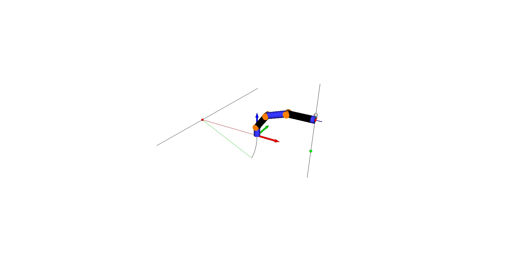

Note
Click here to download the full example code
Visualize Wrench¶
We see a 6-DOF robot arm and we assume that we have a force/torque sensor that measures the force of a spherical mass (gray sphere) at the tool center point (TCP). We can draw the screw representation of the wrench in the TCP frame as a force along a screw axis from the red sphere to the green sphere. Then we use the adjoint representation of the transformation from the base to the TCP to transform the wrench to the robot’s base frame. This wrench has a force component and a torque component, which we can also visualize as a screw: the red sphere indicates the point q on the screw axis, the straight black line shows the screw axis, the red line indicates the direction to the initial configuration and the green line indicates the direction to the displaced configuration in which the instantaneous wrench would move the base.
print(__doc__)
import os
import numpy as np
from pytransform3d.urdf import UrdfTransformManager
import pytransform3d.transformations as pt
import pytransform3d.visualizer as pv
def plot_screw(figure, q=np.zeros(3), s_axis=np.array([1.0, 0.0, 0.0]), h=1.0, theta=1.0, A2B=None, s=1.0):
"""Plot transformation about and along screw axis.
Parameters
----------
figure : Figure
Interface to Open3D's visualizer
q : array-like, shape (3,), optional (default: [0, 0, 0])
Vector to a point on the screw axis
s_axis : array-like, shape (3,), optional (default: [1, 0, 0])
Direction vector of the screw axis
h : float, optional (default: 1)
Pitch of the screw. The pitch is the ratio of translation and rotation
of the screw axis. Infinite pitch indicates pure translation.
theta : float, optional (default: 1)
Rotation angle. h * theta is the translation.
A2B : array-like, shape (4, 4), optional (default: I)
Origin of the screw
s : float, optional (default: 1)
Scaling of the axis and angle that will be drawn
"""
from pytransform3d.rotations import (vector_projection, angle_between_vectors,
perpendicular_to_vectors, _slerp_weights)
from pytransform3d.transformations import check_screw_parameters, transform, translate_transform, vector_to_point, vector_to_direction, vectors_to_points
if A2B is None:
A2B = np.eye(4)
q, s_axis, h = check_screw_parameters(q, s_axis, h)
origin_projected_on_screw_axis = q + vector_projection(-q, s_axis)
pure_translation = np.isinf(h)
if not pure_translation:
screw_axis_to_old_frame = -origin_projected_on_screw_axis
screw_axis_to_rotated_frame = perpendicular_to_vectors(s_axis, screw_axis_to_old_frame)
screw_axis_to_translated_frame = h * s_axis
arc = np.empty((100, 3))
angle = angle_between_vectors(screw_axis_to_old_frame, screw_axis_to_rotated_frame)
for i, t in enumerate(zip(np.linspace(0, 2 * theta / np.pi, len(arc)), np.linspace(0.0, 1.0, len(arc)))):
t1, t2 = t
w1, w2 = _slerp_weights(angle, t1)
arc[i] = (origin_projected_on_screw_axis
+ w1 * screw_axis_to_old_frame
+ w2 * screw_axis_to_rotated_frame
+ screw_axis_to_translated_frame * t2 * theta)
q = transform(A2B, vector_to_point(q))[:3]
s_axis = transform(A2B, vector_to_direction(s_axis))[:3]
if not pure_translation:
arc = transform(A2B, vectors_to_points(arc))[:, :3]
origin_projected_on_screw_axis = transform(A2B, vector_to_point(origin_projected_on_screw_axis))[:3]
# Screw axis
Q = translate_transform(np.eye(4), q)
fig.plot_sphere(radius=s * 0.02, A2B=Q, c=[1, 0, 0])
if pure_translation:
s_axis *= theta
Q_plus_S_axis = translate_transform(np.eye(4), q + s_axis)
fig.plot_sphere(radius=s * 0.02, A2B=Q_plus_S_axis, c=[0, 1, 0])
P = np.array([
[q[0] - s * s_axis[0], q[1] - s * s_axis[1], q[2] - s * s_axis[2]],
[q[0] + (1 + s) * s_axis[0], q[1] + (1 + s) * s_axis[1], q[2] + (1 + s) * s_axis[2]]
])
figure.plot(P=P, c=[0, 0, 0])
if not pure_translation:
# Transformation
figure.plot(arc, c=[0, 0, 0])
for i, c in zip([0, -1], [[1, 0, 0], [0, 1, 0]]):
arc_bound = np.vstack((origin_projected_on_screw_axis, arc[i]))
figure.plot(arc_bound, c=c)
BASE_DIR = "test/test_data/"
data_dir = BASE_DIR
search_path = "."
while (not os.path.exists(data_dir) and
os.path.dirname(search_path) != "pytransform3d"):
search_path = os.path.join(search_path, "..")
data_dir = os.path.join(search_path, BASE_DIR)
tm = UrdfTransformManager()
filename = os.path.join(data_dir, "robot_with_visuals.urdf")
with open(filename, "r") as f:
robot_urdf = f.read()
tm.load_urdf(robot_urdf, mesh_path=data_dir)
tm.set_joint("joint2", 0.2 * np.pi)
tm.set_joint("joint3", 0.2 * np.pi)
tm.set_joint("joint5", 0.1 * np.pi)
tm.set_joint("joint6", 0.5 * np.pi)
ee2base = tm.get_transform("tcp", "robot_arm")
base2ee = tm.get_transform("robot_arm", "tcp")
mass = 1.0
wrench_in_ee = np.array([0.0, 0.0, 0.0, 0.0, -9.81, 0.0]) * mass
wrench_in_base = np.dot(pt.adjoint_from_transform(base2ee).T, wrench_in_ee)
fig = pv.figure()
fig.plot_graph(tm, "robot_arm", s=0.1, show_visuals=True)
fig.plot_transform(s=0.4)
fig.plot_transform(A2B=ee2base, s=0.1)
mass2base = np.copy(ee2base)
mass2base[2, 3] += 0.075
fig.plot_sphere(radius=0.025, A2B=mass2base)
S, theta = pt.screw_axis_from_exponential_coordinates(wrench_in_base)
q, s, h = pt.screw_parameters_from_screw_axis(S)
plot_screw(fig, q, s, h, theta * 0.05)
S, theta = pt.screw_axis_from_exponential_coordinates(wrench_in_ee)
q, s, h = pt.screw_parameters_from_screw_axis(S)
plot_screw(fig, q, s, h, theta * 0.05, A2B=ee2base)
fig.view_init()
if "__file__" in globals():
fig.show()
else:
fig.save_image("__open3d_rendered_image.jpg")
Total running time of the script: ( 0 minutes 0.155 seconds)